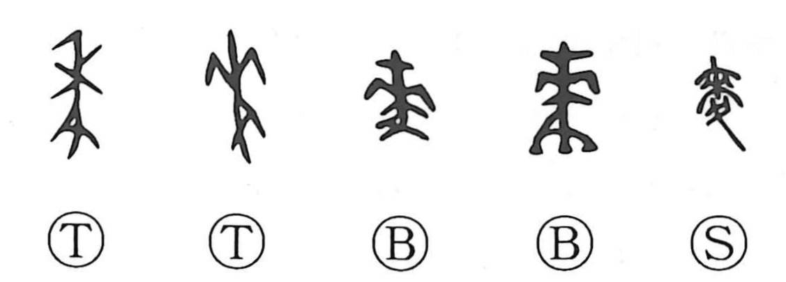

Explanation
The character 麦 is the simplified form of 麥, a compound of 來 and 夊. Here 來 is not the verb “to come,” but the old pictograph of a wheat head, while 夊—an inverted form of 止, the footprint—adds the sense of stepping. Together they evoke the farming practice of treading the field: after sowing in autumn, the seeds are covered and firmly pressed into the soil underfoot, as early descriptions note. From this core image the graph came to mean mugi, wheat and barley. The harvest time of these autumn‑sown grains is celebrated in the expression bakushu, “wheat autumn,” referring to early summer when they ripen. In Zhou legend, the ancestral cultivator Houji receives auspicious grain (jiahe), identified as barley and wheat, reflecting the special esteem for these cereals, which were likely introduced from the west.